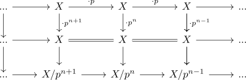
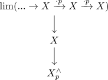

p-complete spectrum and vanishing sequential limit of multiplication
Proposition
- $X$ is p-complete spectrum
- $\lim (... \rightarrow X \xrightarrow{\cdot p} X \xrightarrow{\cdot p} X) \simeq 0$
Proof
recall that there exists a commutative diagram

where the vertical maps form a cofiber sequence.
Now $\mathrm{lim}(-)$ is an exact functor (cf. left / right and exact functor between stable infinity categories), hence there exists a fiber sequnece

which shows that the second map is an equivalence if and only if $\lim (... \rightarrow X \xrightarrow{\cdot p} X \xrightarrow{\cdot p} X)$ vanishes.